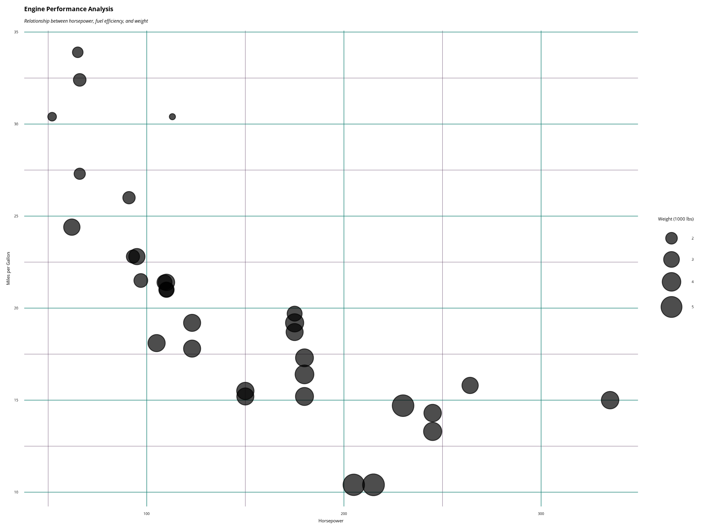

ggplot2 and Thematic Integration with Brand Themes
Source:vignettes/ggplot2-integration.Rmd
ggplot2-integration.RmdOverview
This vignette demonstrates how to integrate ggplot2 and plotly
visualizations with brand themes using the rbranding
package. The package provides functions to:
- Load brand configuration from
_brand.ymlfiles - Apply brand colors and typography to ggplot2 themes
- Add brand logos to plots
- Reset themes when needed
Step 1: Initialize and Load Brand Configuration
Start by initializing the branding configuration and getting the latest brand file:
# Initialize branding (creates config.yml and placeholder _brand.yml)
brand_init()
# Get the latest brand file from the repository
get_brand()
# to install these files directly to your working directory:
get_template("ggplot2)For this vignette, we’ll use the existing _brand.yml
file in the package:
# In a real project, you would have a _brand.yml file in your working directory
# For this demo, we'll use the package's example brand file
brand_file <- system.file("brand_files", "_brand.yml", package = "rbranding")
if (brand_file != "") {
file.copy(brand_file, "_brand.yml")
# Copy logo files as well
logo_files <- list.files(system.file("brand_files", package = "rbranding"),
pattern = "*.png", full.names = TRUE)
file.copy(logo_files, ".")
brand_file <- "_brand.yml"
} else {
# Fallback to a basic brand configuration for demonstration
brand_config <- "
meta:
name:
full: Example Organization
short: EO
color:
palette:
primary: '#1c8478'
secondary: '#4e2d53'
accent: '#474747'
foreground: black
background: white
primary: primary
secondary: secondary
typography:
fonts:
- family: Open Sans
source: google
base: Open Sans
"
writeLines(brand_config, "_brand.yml")
brand_file <- "_brand.yml"
}
cat("Using brand file:", brand_file)
#> Using brand file: _brand.ymlStep 2: Set the ggplot2 Theme
Apply the brand theme to ggplot2. This will set colors and fonts according to your brand configuration:
# Set the brand theme
brand_set_ggplot(brand_file)
#> Brand theme applied successfully!
#> Custom font loaded: open_sansStep 3: Create ggplot2 Visualizations
Now create some plots that will automatically use your brand theme:
# Create a basic scatter plot
p1 <- ggplot(mtcars, aes(x = mpg, y = wt)) +
geom_point(aes(color = factor(cyl)), size = 3) +
labs(
title = "Car Weight vs. Miles per Gallon",
subtitle = "Data from the 1974 Motor Trend magazine",
x = "Miles per Gallon",
y = "Weight (1000 lbs)",
color = "Cylinders"
) +
theme(legend.position = "bottom")
print(p1)Step 4: Add Brand Logo (Optional)
If your brand configuration includes a logo, you can add it to your plots:
# Add logo to the plot (requires logo in brand.yml and png package)
p1_with_logo <- p1 + brand_add_logo(x = 0.9, y = 0.1, size = 0.05)
print(p1_with_logo)Step 5: Interactive Plots with plotly
You can also create interactive versions of your plots using plotly:
Step 6: Advanced Theming
You can customize specific aspects of the theme while maintaining brand consistency:
# Customize theme elements while keeping brand colors
p3 <- ggplot(mtcars, aes(x = hp, y = mpg, size = wt)) +
geom_point(alpha = 0.7) +
scale_size_continuous(range = c(2, 8)) +
labs(
title = "Engine Performance Analysis",
subtitle = "Relationship between horsepower, fuel efficiency, and weight",
x = "Horsepower",
y = "Miles per Gallon",
size = "Weight (1000 lbs)"
) +
theme(
plot.title = element_text(size = 16, face = "bold"),
plot.subtitle = element_text(size = 12, face = "italic"),
legend.position = "right"
)
print(p3)
Step 7: Reset Theme
When you’re done with the brand theme, you can reset to the default ggplot2 theme:
# Reset to original theme
brand_reset_ggplot()
#> ggplot2 theme reset to previous state.
# Create a plot with default theme to show the difference
p4 <- ggplot(mtcars, aes(x = mpg, y = wt)) +
geom_point(aes(color = factor(cyl)), size = 3) +
labs(
title = "Same Plot with Default Theme",
x = "Miles per Gallon",
y = "Weight (1000 lbs)",
color = "Cylinders"
)
print(p4)
Best Practices
-
Set theme early: Call
brand_set_ggplot()at the beginning of your analysis - Test font loading: Custom fonts may not work in all environments
- Use consistent colors: Stick to the brand palette for consistency
-
Reset when needed: Use
brand_reset_ggplot()to return to default themes - Logo placement: Position logos where they don’t interfere with data
Troubleshooting
Common Issues
- Font loading fails: Some environments may not support custom Google Fonts
-
Logo not found: Ensure the logo path in
_brand.ymlis correct and the file exists -
Colors not applied: Check that your
_brand.ymlfile follows the correct schema
Solutions
# Disable custom fonts if having issues
brand_set_ggplot(use_fonts = FALSE)
# Check brand configuration
doc <- yaml::read_yaml("_brand.yml")
str(doc$color)
str(doc$typography)Conclusion
The rbranding package makes it easy to create
consistent, branded visualizations across your organization. By
following this workflow, you can ensure that all your ggplot2 and plotly
charts maintain brand consistency while being accessible and
professional.
For more information about the brand.yml schema, visit: https://github.com/posit-dev/brand-yml/